presents
Atlas of
Global Development 2026
The Atlas of Global Development 2026 presents interactive storytelling and data visualizations on key global trends related to people, prosperity, our planet, infrastructure, and digital transformation.

andData stories on global development
Across the global development landscape, which countries are moving the fastest, and which are losing ground? The 2026 edition of the World Bank’s Atlas of Global Development puts progress at its center. Looking at how fast countries are moving toward better outcomes and facing different challenges, from their own individual starting points, this edition introduces a new framework to track development over the past 75 years, revealing how countries have advanced across key dimensions.
Explore the pace of progress, dive into the data, and discover the stories across the World Bank’s five themes: people, prosperity, planet, infrastructure, and digital.
Read more on Measuring Progress.
Progress is the slowest on record in
15 of 26
of the explored development indicators
Only 1 in 2
women are engaged in income-generating work
1 in 2
of the world's extreme poor live in countries where poverty has increased in the past 10 years
Around 50%
of countries with data (48 out of 94) face water quality challenges
1 in 2
people in Sub-Saharan Africa live without electricity today
1 in 4
people worldwide do not use the Internet